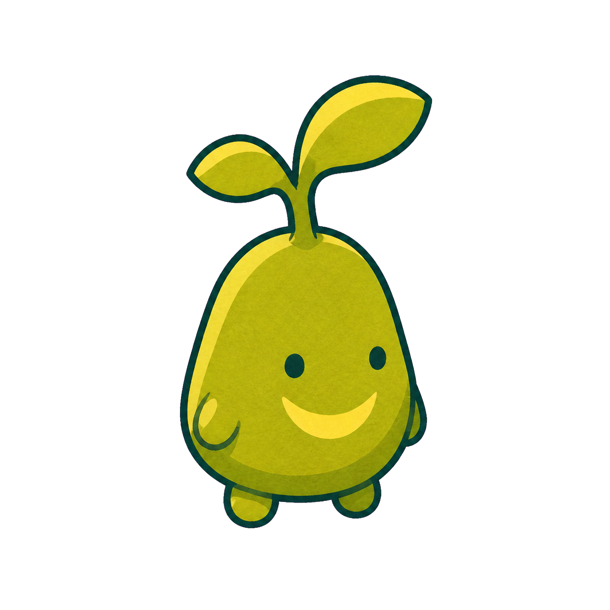
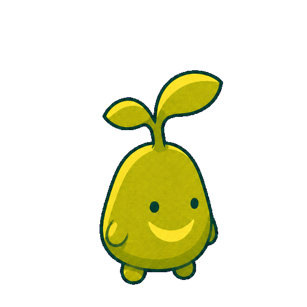

A — DIRECT IMAGEGEN
直接生成
一枚の見栄えは良い。コンセプト確認には速いが、動き・足位置・フレーム分割・検査は別途必要。
SANsu VISUAL PIPELINE TEST
左は画像生成だけで作った静止画。右は同じ相棒を2×2のアイドルモーションとして生成し、Agent Sprite Forgeで透明化・分割・足位置合わせ・品質検査まで行った結果です。

A — DIRECT IMAGEGEN
一枚の見栄えは良い。コンセプト確認には速いが、動き・足位置・フレーム分割・検査は別途必要。

B — AGENT SPRITE FORGE
4フレーム、透明PNG、アトラス、GIF、検査JSONを同時に出力。ゲームへ組み込みやすい。
| 比較項目 | 直接生成 | Sprite Forge |
|---|---|---|
| 見た目の方向決め | 強い | 同じ生成エンジンなので同等 |
| 再利用可能なフレーム | 1枚 | 4枚＋透明アトラス＋GIF |
| 位置・大きさ | 目視調整 | 足位置と出力原点を統一 |
| 自動検査 | なし | 端接触・空フレーム・縮尺・原点を検査 |
| 今回の縮尺ばらつき | 計測なし | 4.02% |
| 今回の縦原点ばらつき | 計測なし | 4.57% |
| 弱点 | 量産で不整合が出やすい | 画風そのものは改善しない |
判定: Sansuでは、画像生成をコンセプトと原画に使い、Sprite Forgeを相棒・花・水晶・小物の分離、モーション整列、品質検査に使うハイブリッドが最適です。一枚絵の代替ではなく、本番素材化の工程として採用します。